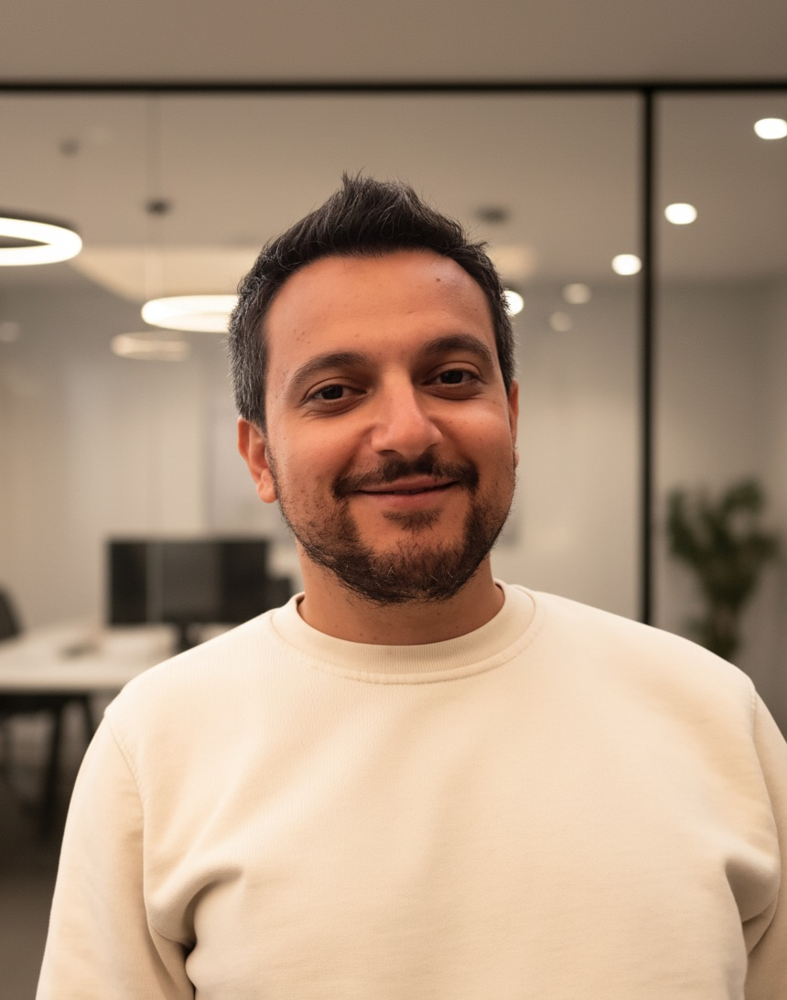

MASSIMO
NICOSIA
Staff Research Engineer
Google DeepMind
Hi, I am Massimo and I work at Google DeepMind (Zürich). Here I make VLMs better at understanding and generating images involving complex structure and quantities. In my free time, I like to make music with my guitar and by mixing samples.

Understanding and Generation with Vision Language Models
I am a core Gemini contributor and I specialize in the domain of non-natural images (charts, infographics, diagrams). I work on image generation, image understanding, object detection and evaluation, across pretraining and post-training.
My prior work at Google includes multilingual semantic parsing and tabular reasoning.
I hold a Ph.D. from the University of Trento, where my research centered on structural kernels and deep learning methods for question answering.
News
Publications
Gemini 2.5 Tech Report
Pushing the Frontier with Advanced Reasoning, Multimodality, Long Context, and Next Generation Agentic Capabilities.
XTREME-UP
A User-Centric Scarce-Data Benchmark for Under-Represented Languages.
Translate & Fill
Improving Zero-Shot Multilingual Semantic Parsing with Synthetic Data
Curriculum Vitae
Google DeepMind
Focus: structured and multimodal data for Gemini pretraining and post-training, infographics generation with Nanobanana.
Google Research
Focus: i18n of semantic parsing models for the Assistant and YouTube, conversational semantic parsing, question answering.
University of Trento
Thesis on structural kernels and neural network models for question answering systems. Advisors: Prof. A. Moschitti.
Qatar Computing Research Institute
Research and software engineering (NLP and Machine Learning) in the Arabic Language Technologies group, first as a research associate and then as a consultant.